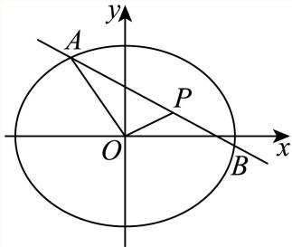

01 【来源：闵行26二模·1】
查看所属专题已知集合 ，，则 ______。
答案与解析
答案
{3,4}
解析
利用交集的定义求解.
集合A = {1, 2, 3, 4}, B = {3, 4, 5, 6}, 则A ∩ B = {3, 4}
整卷阅读 · 教师版 · 21 题
按来源题号排列；内容来自分类汇编，仍需回源核对。
没有找到匹配题目。
已知集合 ，，则 ______。
{3,4}
利用交集的定义求解.
集合A = {1, 2, 3, 4}, B = {3, 4, 5, 6}, 则A ∩ B = {3, 4}
设 ，不等式 的解集是______。
(0,4)
，故 ，解集为 。
已知球的表面积为 ，则该球的体积为______。
根据球体表面积计算公式求出球体半径，再根据球体体积计算公式求出球体体积即可设球体的半径为R，根据已知有： ，解得R=1，所以球体体积为：
故答案为：
已知 ，若 是幂函数，且 ，则 ______。
8
因为 为幂函数，得 ，所以 。由 ，得 ，故 。因此 。
已知事件 发生的概率 ，事件 发生的概率 ，若事件 与 独立，则 ______。
0.1
因为事件A与B独立，事件A发生的概率P(A) = 0.2，事件B发生的概率P(B)= 0.5,
若 ，则 ______。
0
令 得全部系数和为1；令 得常数项 。相减得 。
已知 ，若 （其中 为虚数单位），则 ______。
由分母知 。利用 ，原式等价于 ，故 。
在 中，，，，点 在以 为焦点的双曲线上，则该双曲线的两条渐近线的夹角大小为______。
焦距 ，实轴长 ，所以 。
以焦点连线为横轴，两渐近线斜率为 ，倾斜角为 ，锐夹角为 。
已知等比数列 的公比为 ，若 ，则 的取值范围是______。
(0, 1) ∪ (1, 2).
按等比数列各项非零的通常定义，公比 ；无穷和收敛且等于1，故 ，并有 ，即 。
因此前三项和为 ，范围为 。
小闵同学打算将“20260407”中的 个数字“”进行排列得到密码。如果排列时要求两个“”相邻且三个“”不相邻，那么小闵可以设置的不同密码的个数为______。
240
利用相邻问题及不相邻问题列式求解.
将两个2绑在一起视为一个数，与6,4,7作全排列，再在形成的5个间隙中插入3个0,所以不同密码个数为
已知 ，若不等式 的解集中有且仅有两个整数，则 的最小值为______。
。
定义域为 。
记 ，则 ，在 递增，在 递减。
对于正整数： 满足原不等式当且仅当 ； 满足当且仅当 ；整数 满足当且仅当 。
又 。
于是： - 时，所有整数 均满足，不合题意； - 时，至少有 三个整数解； - 时，恰有 两个整数解； - 时，恰有 三个整数解； - 时，恰有 两个整数解。
故参数集为 ，最小值为 。
定义：平面内图形 上的所有点在直线 上的射影所组成的图形称为 在 上的射影。若存在边长为 的正三角形在正方形的四条边所在直线上的射影长度之和为 ，则 的取值范围为______。
把正方形相邻两边方向作为坐标轴。
三角形在四条边所在直线上的投影和为横向宽度与纵向宽度之和的两倍，记为 。
正三角形旋转 不改变图形方向组；交换两坐标轴也不改变宽度和。
因此只需考察一边与横轴夹角 。
取顶点 、、，得 所以 连续取遍 。
存在方向使 ，等价于 ，即
以下是由变量 与 所绘制的散点图，则它们的线性相关程度较高且正相关的是（ ）。

D
对于A：散点杂乱无章，无规律可言，看不出两个变量有什么相关性；故A错误；
对于B：两个变量不具有线性相关性，故B错误；
对于C：两个变量之间的关系为负相关关系；故C错误；
对于D：两个变量之间的关系为正相关关系，且散点图中的点分布在一条直线附近，线性相关程度较高；故D正确.
已知定义在 上的偶函数 在 上是严格减函数，若 ，则 的取值范围为（ ）。
A. B. C. D.
A
由偶性 ，再由 上严格递减，得 。故选A。
若平面直角坐标系 中的点 到 轴与 轴的距离之和为 ，现有以下两个命题：
①存在点 到 轴与 轴的距离之差为 ；
②存在点 到 轴与 轴的距离之积为 。
则以下选项正确的是（ ）。
A. ①不正确，②不正确
B. ①正确，②正确
C. ①正确，②不正确
D. ①不正确，②正确
C
设两距离为 ，。取 即有 ，①成立。由 ，不可能乘积为1，②不成立。故选C。
已知平面上 个向量 ，其中 ，若对任意 ，，总有 且 ，则 的最小值为（ ）。
A. B. C. D.
B
由递推得 。
在平面内，相邻非零向量垂直，所以所有奇数下标向量共线，所有偶数下标向量共线，两组方向相互垂直。
记两组之和分别为 。
由反三角不等式， 在每组中令最大向量与其余向量反向，两个下界可同时达到，且不破坏相邻垂直关系。
因此总和模的最小值为 ，选B。
某学校举办“乐动体育”比赛活动，高三年级共有 名学生报名参加“小球类项目”，其中参加乒乓球项目的有 人，参加羽毛球项目的有 人，赛前进行了一道比赛通用规则判断题测试，答对得 分，答错得 分，统计结果如下表：
| 乒乓球项目 | 羽毛球项目 | |
|---|---|---|
| 答对人数 | 19 | 16 |
| 答错人数 | 9 | 6 |
根据上述数据，回答下列问题：
（1）求这 名学生的平均得分。
（2）从这 名学生中随机选取 人做裁判。设随机变量 表示两名裁判的最高得分，求 。
（3）是否有 的把握认为该题的测试成绩与比赛项目有关？
附：，，。
3.5
没有 95%的把握认为测试成绩与比赛项目有关.
总得分为35 × 5 = 175,
因此平均得分
所以
零假设 为：该题的测试成绩与比赛项目无关，
因为
因此在显著性水平0.05下不拒绝零假设，没有充分证据认为测试成绩与比赛项目有关。
如图，圆柱 的轴截面 是边长为 的正方形， 为底面圆 的一条直径，且 。

（1）求异面直线 与 所成角的大小（用反三角表示）。
（2）求点 到平面 的距离。
以 为原点、 方向为 轴、 为 轴建系。可取
（1）、，故异面直线所成角 满足 即 。
（2），可取平面 的法向量 。
又 ，所以 > 校订说明：原转录第(1)问向量A₁N的第二分量误写−1，应为1，最终角度不变。
已知 ，。
（1）当 时，解方程 。
（2）若函数 在 上有唯一的极值点，求 的取值范围，并判断这个极值点是极大值点还是极小值点。
方程的解集为
，极值点为极大值点.
（1）当 ，，故 （）。
（2）在 上， 令 ，则 ，值域为 。
因此有唯一驻点当且仅当 。
在该点左侧 ，右侧 ，故它是唯一极大值点。
已知椭圆 （）的焦距为 ，离心率为 ，过点 的直线交椭圆于点 。
（1）求 的方程。
（2）记 的面积为 ，求证：。
（3）求 的最大值与最小值，并写出取最大值与最小值时直线 的方程。
证明见解析
(3)最大值8，直线方程y =1；最小值2，直线方程
由椭圆关系 ，因此椭圆Γ的方程为：
(2)设 ，因为P(2,1), O(0,0)，所以直线 即
所以点A到直线OP的距离 ，又
所以
由A在椭圆上得 ，所以可设
因此 得证.
代入椭圆方程整理得：
由参数t的几何意义得
结合韦达定理得：
斜率存在时，设斜率为 ，化简得
由 得：当k =0时， 取得最大值8，对应直线方程为
当直线斜率不存在时，直线为 ，此时 ，为最小值.

综上， 的最大值为8，对应直线方程为y=1；最小值为2，对应直线方程为
对于定义在 上的函数 ，若存在实数对 ，对于任意的实数 ，都有 成立，则称函数 为“M型函数”，点 称为 的“M点”。
（1）判断函数 与 是否为“M型函数”（无须说明理由）。
（2）是否存在“M型函数” ，其图象上的所有点都是 的“M点”，如果存在，求出所有满足题意的 ，如果不存在，说明理由。
（3）设 ，，函数 是“M型函数”，且 的图象是一条连续曲线。已知 ，点 、 都是 的“M点”。证明：“对任意 ，当 时，均有 ”是“函数 在 上为严格减函数”的充要条件。
f (x) = x不是“ M型函数”， 是“M型函数”
证明见解析
（1） 不是“M型函数”，因为 不可能对所有 为常数； 是“M型函数”，因为 。
（2）若图象上每点 均为“M点”，取 得 ，故每个函数值只能是 或 。
若某点 满足 ，则 ，两因子均须为 ；随 变化覆盖实轴，得到 。
否则 。
二者均满足条件。
（3）由两个“M点”取 ，得 、。因此 且 。
必要性：若 在实轴严格递减， 时三个差都为正，乘积为正。
充分性：所给乘积恒正意味着任意 都有 。
连续函数在区间上单射必严格单调；结合端点值 ，知 在 严格递减。
令 ，则 连续，且 因此 的图象分别关于 、 中心对称。
关于 的中心对称将 上的严格递减性延伸到 ；两次中心对称又给出 故严格递减性沿长度 的相邻区间延伸至整条实轴，公共端点连续，整体仍严格递减。
由于指数函数严格递增， 在实轴严格递减。